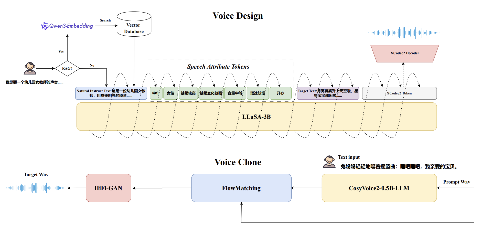

VoiceSculptor:
Your Voice, Designed By You
Jingbin Hu1, Huakang Chen1, Linhan Ma1, Dake Guo1, Qirui Zhan1, Wenhao Li1, Haoyu Zhang1,
Kangxiang Xia1,
Ziyu Zhang1, Wenjie Tian1, Chengyou Wang1, Jinrui Liang1, Shuhan Guo1, Zihang Yang1, Lei Xie1, BenGu Wu2,
Pengyuan Xie3, Chuan Xie3, Qiang Zhang3, Jie Liu3
1Audio, Speech and Language Processing Group (ASLP@NPU), School of Computer Science, Northwestern Polytechnical University, Xi'an, China
2Yutu ZhiNeng, Beijing, China
3Shanghai Lingguang Zhaxian Technology
📄 Technical Report | 🤗 Hugging Face | 🧪 Hugging Face Demo | 💻 GitHub Repo
Abstract
Contents
- System Overview
- Demo Video
- Instruct TTS Eval
- Role Play
- Low Level Control
- Emotion Control
- Retrieval-Augmented Generation
- Voice Clone
This page is for research demonstration purposes only.
System Overview

Figure 1. An overview of our VoiceSculptor system.
Demo Video
Instruct TTS Eval(ZH)
| model | APS (%) | DSD (%) | RP (%) | AVG (%) |
|---|---|---|---|---|
| gemini-flash* | 88.2 | 90.9 | 77.3 | 85.4 |
| gemini-pro* | 89.0 | 90.1 | 75.5 | 84.8 |
| gpt-4o-mini-tts* | 54.9 | 52.3 | 46.0 | 51.1 |
| elevenlabs* | 42.8 | 50.9 | 59.1 | 50.9 |
| VoxInstruct | 47.5 | 52.3 | 42.6 | 47.5 |
| mimo-audio-7B-instruct | 70.17 | 66.1 | 57.1 | 64.5 |
| VoiceSculptor | 77.9 | 65.9 | 59.1 | 67.6 |
Note：
• Models marked with * are commercial models.
• The highlighted row shows the performance of the VoiceSculptor model.
Role Play
VoiceSculptor can role-play as any character.
| Role | Instruct Text | Text | Generated |
|---|---|---|---|
| 诗歌朗诵-雄浑有力 | 一位男性现代诗朗诵者，用深沉磁性的低音，以顿挫有力的节奏演绎艾青诗歌，音量洪亮，情感激昂澎湃。 | 为什么我的眼里常含泪水？因为我对这土地爱得深沉。这土地，这河流，这吹刮着的暴风。 | |
| 评书表演-抑扬顿挫 | 这是一位男性评书表演者，用传统说唱腔调，以变速节奏和韵律感极强的语速讲述江湖故事，音量时高时低，充满江湖气。 | 话说那武松，提着哨棒，直奔景阳冈。天色将晚，酒劲上头，只听一阵狂风，老虎来啦！ | |
| 戏剧表演-夸张戏剧 | 这是一位男性戏剧表演者，用夸张戏剧化的嗓音，以忽高忽低的音调和时快时慢的语速表演独白，充满张力。 | 我疯了！彻底疯了！你们都说我疯了！可疯的是这个世界！清醒的人反而被当成疯子！ | |
| 童话故事-甜美夸张 | 这是一位女性童话旁白朗诵者，用甜美夸张的童声，以跳跃变化的语速讲述《安徒生童话》，音调偏高，充满奇幻色彩。 | 在一个很冷很冷的夜晚，小女孩擦亮了一根火柴。突然，温暖的火炉出现了！她觉得自己好像坐在火炉旁。 | |
| 老奶奶-沙哑低沉 | 一位慈祥的老奶奶，用沙哑低沉的嗓音，以极慢而温暖的语速讲述民间传说，音量微弱但清晰，带着怀旧和神秘的情感。 | 很久很久以前，在山的那边，住着一只会说话的狐狸。它常常在月圆之夜，变成美丽的姑娘，来到村子里。 | |
| 幼儿园女教师-温柔甜美 | 这是一位幼儿园女教师，用甜美明亮的嗓音，以极慢且富有耐心的语速，带着温柔鼓励的情感，用标准普通话给小朋友讲睡前故事，音量轻柔适中，咬字格外清晰。 | 月亮婆婆升上天空啦，星星宝宝都困啦。小白兔躺在床上，盖好小被子，闭上眼睛。兔妈妈轻轻地唱着摇篮曲：睡吧睡吧，我亲爱的宝贝。 | |
| 小女孩-尖锐清脆 | 一位7岁的小女孩，用天真高亢的童声，以不稳定的快节奏，充满兴奋和炫耀地背诵乘法口诀，音调忽高忽低，带着儿童特有的尖锐清脆。 | 一一得一！一二得二！一三得三！我会背乘法口诀啦！老师今天表扬我啦！妈妈说我最棒！ | |
| 广告配音-沧桑浑厚 | 这是一位男性白酒品牌广告配音，用沧桑浑厚的嗓音，以缓慢而豪迈的语速，音量洪亮，传递历史底蕴和男人情怀。 | 一杯敬过往，一杯敬远方。传承千年的酿造工艺，只在每一滴醇香。老朋友，值得好酒。 | |
| 纪录片旁白-低沉磁性 | 这是一位男性纪录片旁白，用深沉磁性的嗓音，以缓慢而富有画面感的语速讲述自然奇观，音量适中，充满敬畏和诗意。 | 在这片广袤的非洲草原上，生命与死亡每天都在上演。猎豹的速度，羚羊的敏捷，都是生存的代价。 | |
| 相声风格-夸张幽默 | 这是一位男性相声表演者，用夸张幽默的嗓音，以时快时慢的节奏抖包袱，音调起伏大，充满喜感和节奏感。 | 我这个人啊，最大的优点就是太谦虚。谦虚到什么程度？连谦虚本身都觉得我太谦虚了！ | |
| 悬疑小说-低沉神秘 | 一位男性悬疑小说演播者，用低沉神秘的嗓音，以时快时慢的变速节奏营造紧张氛围，音量忽高忽低，充满悬念感。 | 深夜，他独自走在空无一人的小巷。脚步声，回声，还有……另一个人的呼吸声。他猛地回头——什么也没有。 | |
| 新闻主播-清晰明亮 | 这是一位女性新闻主播，用标准普通话以清晰明亮的中高音，以平稳专业的语速播报时事新闻，音量洪亮，情感客观中立。 | 本台讯，今日凌晨，我国成功发射新一代载人飞船试验船。此次任务验证了多项关键技术，为后续空间站建设奠定基础。 | |
| 冥想引导师-空灵悠长 | 一位女性冥想引导师，用空灵悠长的气声，以极慢而飘渺的语速，配合环境音效，音量轻柔，营造禅意空间。 | 想象你是一片叶子，随风飘落。没有牵挂，没有重量。只有呼吸，只有当下，只有宁静。 | |
| 法治节目-庄严庄重 | 这是一位男性法治节目主持人，用严肃庄重的嗓音，以平稳有力的语速讲述案件，音量适中，体现法律的威严。 | 天网恢恢，疏而不漏。任何触犯法律的行为，终将受到公正的审判。正义或许会迟到，但绝不会缺席。 | |
| 年轻女主播-直播带货 | 这是一位年轻女主播，用标准普通话以明亮快速的语速进行直播带货，音调偏高且充满激情，音量响亮，情绪亢奋极具煽动性。 | 家人们！这款面膜最后五百单！三二一，上链接！买到就是赚到，快抢快抢！我已经自留十盒了！ | |
| 男销售员-热情饱满 | 一位男销售员，用热情饱满的高亢嗓音，以极快且富有煽动性的语速推销产品，音量逐渐提高，充满夸张和诱惑。 | 家人们！这款保健品吃了能长寿！今天不要999，只要99！99你买不了吃亏，买不了上当！抢到就是赚到！ | |
| 历史老师-沉稳渊博 | 这是一位男性历史老师，用沉稳渊博的嗓音，以中等偏慢的语速讲解历史事件，音量适中，充满知识性和启发性。 | 安史之乱不仅是唐朝的转折点，更是整个中华文明由盛转衰的关键节点。我们要从多个角度看这段历史。 |
Low Level Control
VoiceSculptor enables fine-grained control over gender, age, pitch, pitch-variation range, volume, and speaking speed by combining natural language with tags.
| Text | Instruct Text | Tag | Generated |
|---|---|---|---|
| 本台讯，今日凌晨，我国成功发射新一代载人飞船试验船。此次任务验证了多项关键技术，为后续空间站建设奠定基础。 | 这是一位少年女性新闻主播 | 小孩 | |
| 这是一位青年女性新闻主播 | 青年 | ||
| 这是一位中年女性新闻主播 | 中年 | ||
| 这是一位老年女性新闻主播 | 老年 | ||
| 这是一位女性新闻主播 | 女性 | ||
| 这是一位男性新闻主播 | 男性 | ||
| 这是一位女性新闻主播，音调高。 | 音调很高 | ||
| 这是一位女性新闻主播，音调中等。 | 音调中等 | ||
| 这是一位女性新闻主播，音调低。 | 音调很低 | ||
| 这是一位女性新闻主播，音调变化很强。 | 音调变化很强 | ||
| 这是一位女性新闻主播，音调变化一般。 | 音调变化一般 | ||
| 这是一位女性新闻主播，音调变化很弱。 | 音调变化很弱 | ||
| 这是一位女性新闻主播，音量很大。 | 音量很大 | ||
| 这是一位女性新闻主播，音量中等。 | 音量中等 | ||
| 这是一位女性新闻主播，音量很小。 | 音量很小 | ||
| 这是一位女性新闻主播，语速很快。 | 语速很快 | ||
| 这是一位女性新闻主播，语速中等。 | 语速中等 | ||
| 这是一位女性新闻主播，语速很慢。 | 语速很慢 |